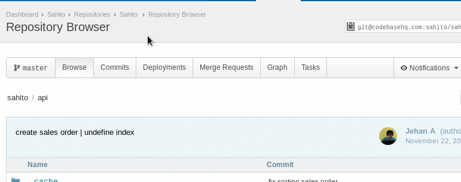

Status
- WIP (work in progress)
- Merge Request bisa dilakukan pada saat fitur sedang dikerjakan
- Belum siap di merge
- Untuk menandai merge request WIP, bisa dengan menambahkan keterangan
[WIP]di judul merge request
- Ready to merge (in review)
- Reviewer yang di assign akan memeriksa kode yang di submit
- Selanjutnya akan di merge oleh reviewer/maintainer
- Untuk menandai merge rjquest siap di merge, maka hapus keterangan
[WIP]di judul merge request (jika ada).
Membuat Merge Request
- Pastikan perubahan sudah di
commitdan dipushke remote feature branch. Mengikuti langkah yang tertulis di sini - Buka halaman web repository yang akan dibuat merge request
- kemudian pilih tab Merge Request

- Beri judul dan isi keterangan merge request
- Bila merge request yang dibuat belum selesai (on progress) maka di judul diberi flag
[WIP]
- Bila merge request yang dibuat belum selesai (on progress) maka di judul diberi flag
- Assign reviewer/maintainer
- Pastikan source branch menunjukkan branch fitur
- Pastikan target branch menunjukkan branch master
- Klik
Create Merge Request
Review dan revisi
- Reviewer dan developer (atau siapa saja yang memiliki akses ke repo) dapat memberikan komentar di file yang berubah.
- Apabila membutuhkan revisi, maka developer akan diberi informasi oleh reviewer untuk melakukan revisi.
- Selesai melakukan revisi, developer akan melakukan commit dan push ke feature branch lagi, seperti ditunjukkan di flow ini.
- Hapus status
[WIP]dari judul merge request. - Feature branch siap untuk di merge ke master branch.
Selesai
- Bila merge request sudah di merge oleh maintainer, maka developer dapat mengupdate branch master lokal, atau branch fitur lain yang sedang dikerjakan dengan metode fetch-rebase
- Untuk mengerjakan fitur lain, tidak perlu menunggu review selesai, cukup ganti branch ke branch lain yang akan dikerjakan.